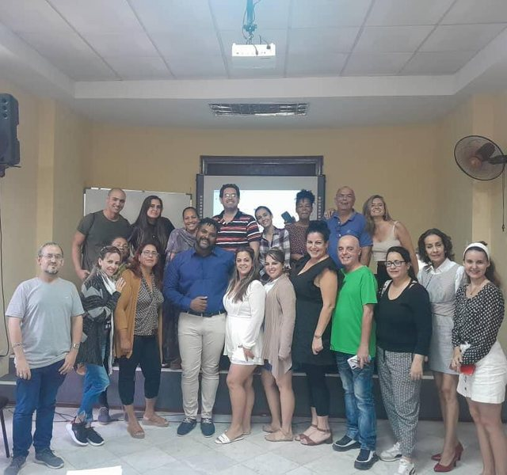
La Habana · 2023
Taller de Podcasts
Instituto Internacional de Periodismo José Martí
Magíster en Comunicación y Educación · Especialista en Comunicación Radiofónica (UNLP) — Licenciada en Comunicación Social · Locutora Nacional (UNR / ISET N.º 18)
Productora de radio y medios audiovisuales, realizadora integral de podcasts, docente universitaria y locutora profesional: voz en off, doblaje, audiolibros, locución comercial, artística e institucional.
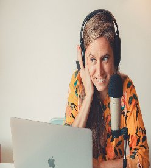
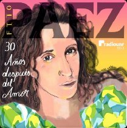
Homenaje a uno de los discos emblemáticos del rock nacional, producido íntegramente en Radio Universidad de Rosario. Participación en la producción y la locución.
Cátedra de Producción Radiofónica. Dicta talleres de realización de podcasts de manera presencial y virtual, para instituciones, infancias, juventudes y adultos mayores.
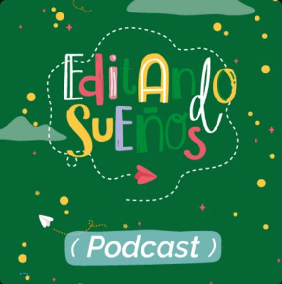
Dispositivo de mediación lectora y producción de podcasts con infancias, donde la oralidad, la lectura y la experimentación con el sonido se articulan como herramientas lúdicas y pedagógicas de expresión. Docente tallerista, facilitadora y edición técnica.

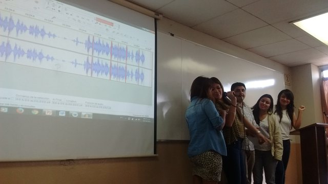
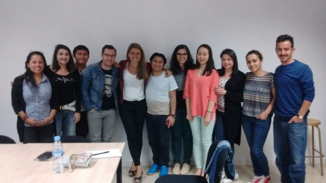
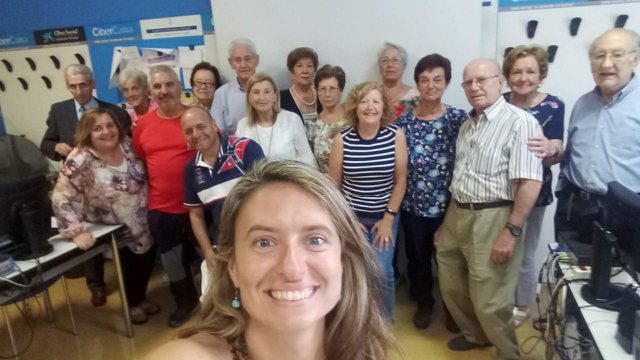
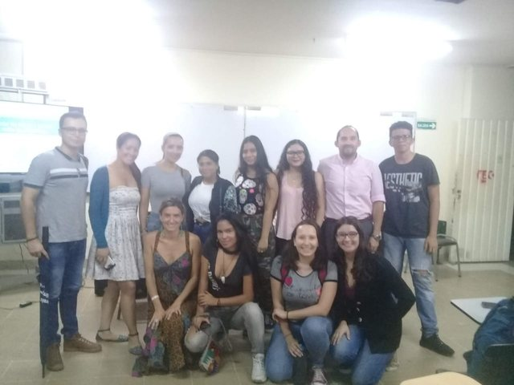
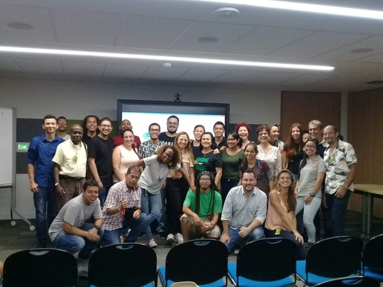
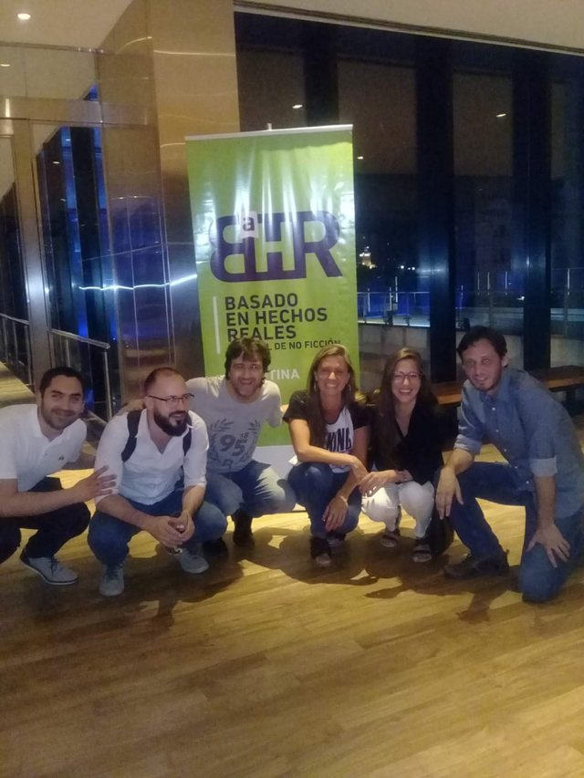
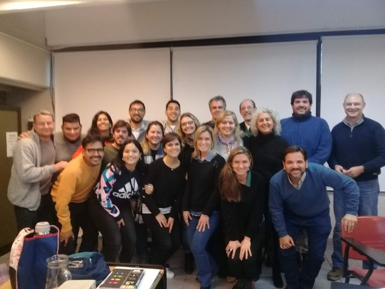
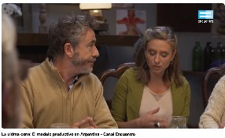
Serie documental sobre la relación de los argentinos con la alimentación, la historia de la comida y el modelo de producción actual.
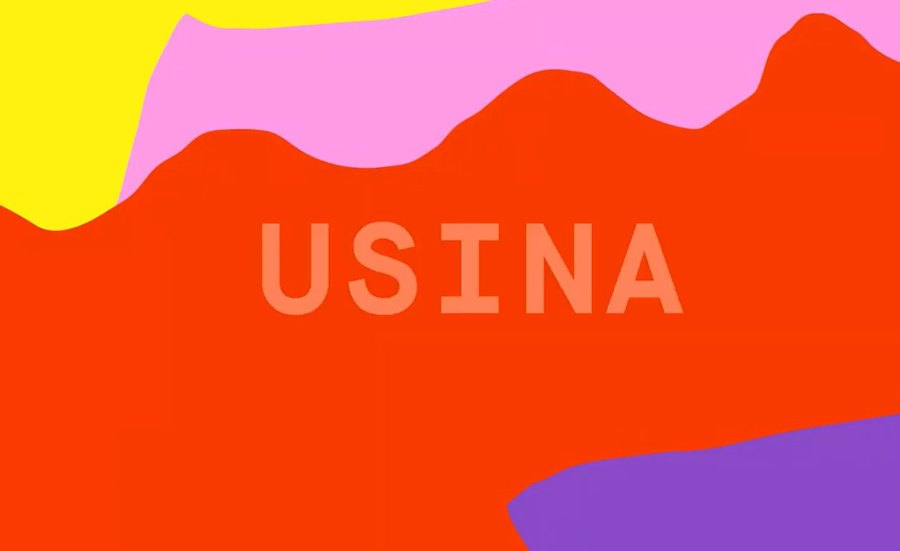
Entrevistas a Jack Black, Pepe Mujica, Rubén Rada y Leonardo Sbaraglia, entre otros.
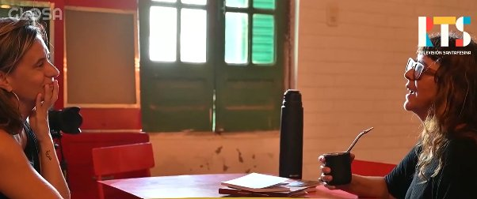
Ciclo de micros audiovisuales dedicado a la literatura santafesina: entrevistas íntimas con escritoras y escritores, registradas en territorio.
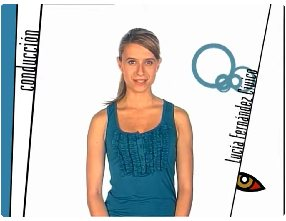
Panorama de la producción audiovisual latinoamericana —ficción, documental, animación y experimental—: «un espacio donde Latinoamérica se revela en imágenes».
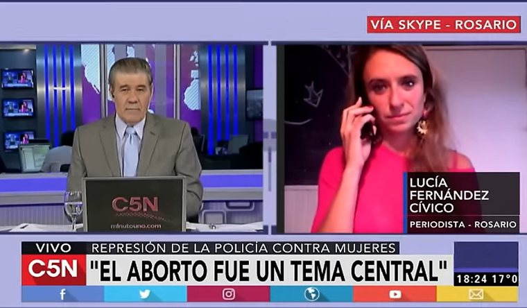
Encuentro Nacional de Mujeres · Acto Central del Día de la Bandera con visita presidencial.
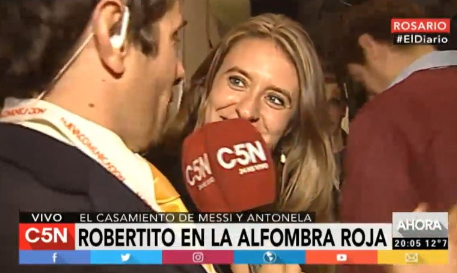
Cobertura de uno de los acontecimientos más seguidos de la ciudad, desde la alfombra roja.
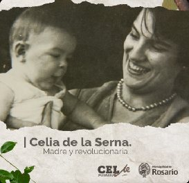
Investigación histórica del Centro de Estudios Latinoamericanos Ernesto Che Guevara, de la Secretaría de Cultura y Educación de la Municipalidad de Rosario, con la Cátedra de Producción Radiofónica, el Laboratorio Sonoro de la UNR y el Museo de la Ciudad.
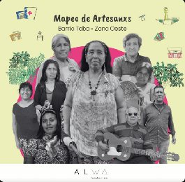
Episodios sonoros que resguardan el saber-hacer y la memoria del Pueblo Qom del Barrio Toba Zona Oeste de Rosario: a través de sus voces, las historias, los oficios y los territorios que conforman el corazón vivo de su cultura. Con Fundación Alwa, la Escuela de Comunicación de la UNR y el Laboratorio Sonoro.
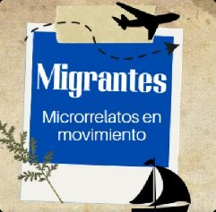
Serie de relatos testimoniales en primera persona para el programa «Rosario Abierta al Mundo» de la Dirección General de Relaciones Internacionales de la Municipalidad de Rosario, visibilizando trayectorias e integración de comunidades migrantes en la ciudad.
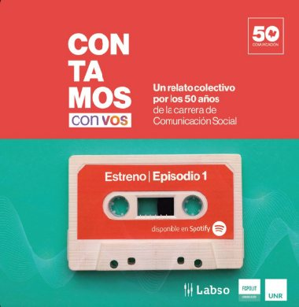
Podcast documental por los 50 años de Comunicación Social (UNR): testimonios de pioneros y proyecciones de la educación pública.
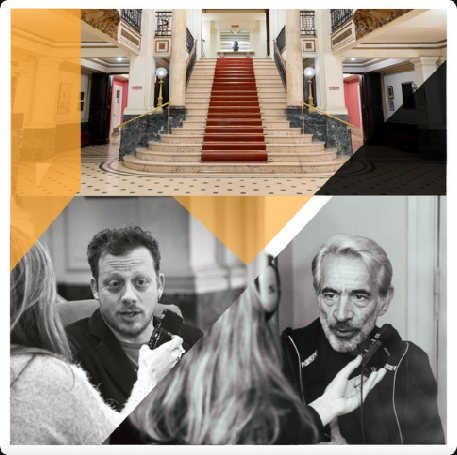
Divulgación cultural y patrimonial: la historia, la mística y los entretelones de uno de los teatros más emblemáticos de Rosario, en entrevistas íntimas a figuras de las artes escénicas.
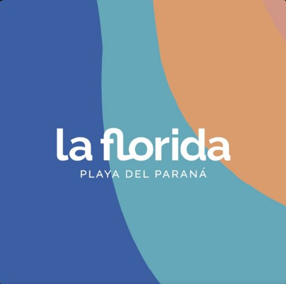
Documental sonoro que explora la ribera rosarina a través de ejes históricos, turísticos, ecológicos y colectivos, construyendo una mirada sobre la identidad urbana vinculada al río Paraná.
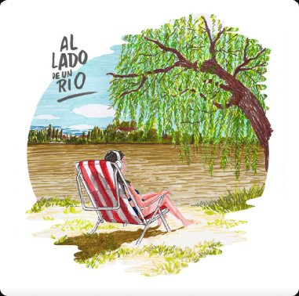
Podcast de música hecha en Rosario, junto a Pablo Zini. Cada semana en el bar cultural Casa Brava, con artistas que crean al lado del Paraná.
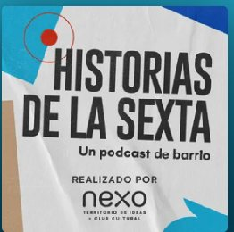
Serie de podcasts barriales dedicados a la identidad, las memorias colectivas y los personajes del tradicional Barrio República de la Sexta.
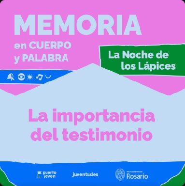
Miniserie en tres capítulos que promueve la memoria intergeneracional conectando las vivencias del pasado con las inquietudes juveniles actuales. Resultado del taller en el Laboratorio Tecnológico de Puerto Joven, en el marco de Septiembre Joven.
Locución comercial, institucional y en inglés. Estudio de grabación propio.
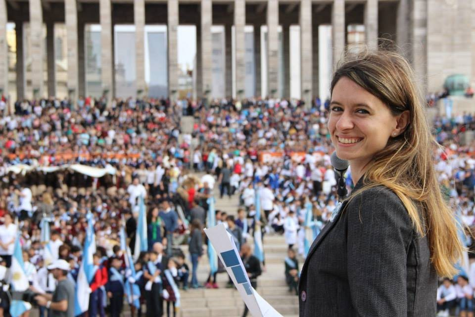
Conducción y locución de actos oficiales, aperturas institucionales, congresos y ceremonias protocolares para organismos públicos y universidades.
Locución comercial, institucional y artística, voz en off, doblaje y audiolibros, con estudio de grabación propio.
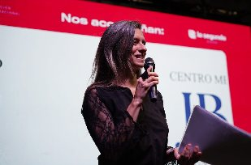
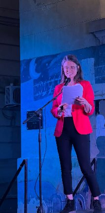
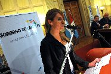
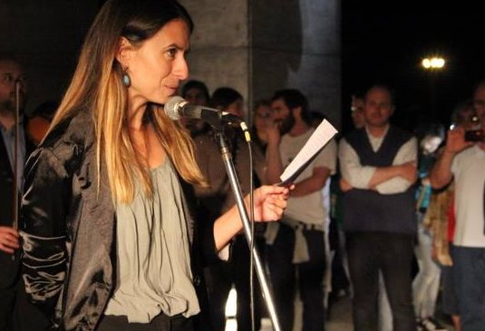
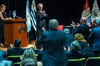
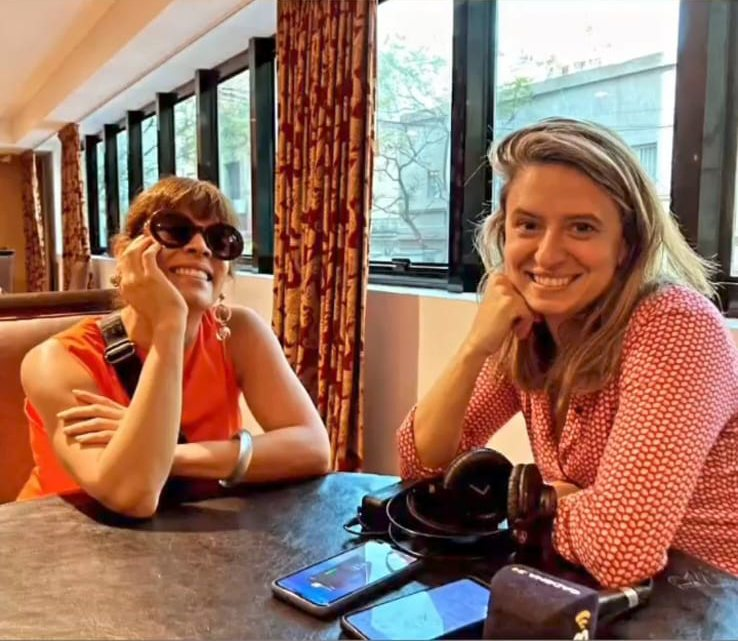
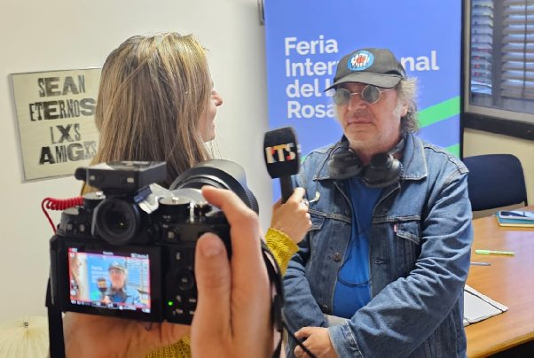
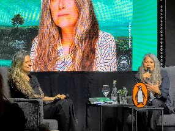
También entrevistó a Joan Manuel Serrat, entre otras figuras.
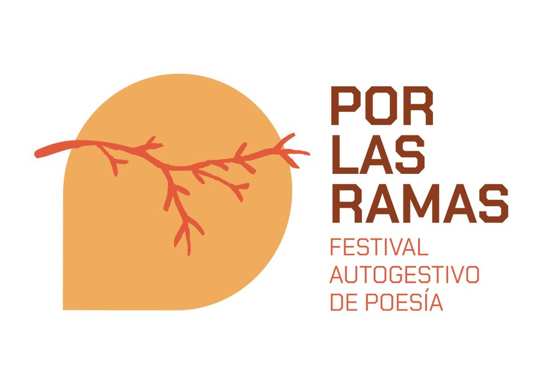
Co-organizadora del primer festival de poesía de la localidad, en la cordillera chubutense.
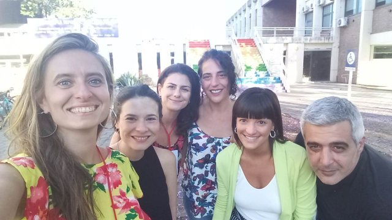
Organización del encuentro nacional, con cobertura en medios televisivos y de la Facultad de Ciencia Política y RR.II. de la UNR.
Docencia y talleres, producción de podcasts, conducción y locución. Estudio de grabación propio.